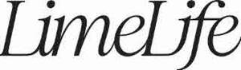

Trade Mark Journal No.2025/045 7 November 2025
UK00004286686 30 October 2025 (3,21,35,41,44)

International priority date claimed: 1 May 2025
(United States of America)
(99165449)
- Class 3
- Cosmetic soaps; Toilet soaps; Perfumes; Eaux de toilette; Scented linen water; Essential oils; Cosmetics; Hair lotions; Dentifrices; Oils for toiletry purposes; Oils for cosmetic purposes; Oils for perfumes and scents; Shampoos; Shower gels; Non-medicated bubble bath preparations; Gels for cosmetic purposes; Cosmetic masks; Non-medicated exfoliating preparations for the face; Beauty masks; Cosmetic preparations for baths; Cosmetic products in the form of aerosols for skincare; Cosmetic creams; Face creams for cosmetic use; Cosmetic hand creams; Cosmetic body care preparations, namely, cosmetic creams for the body; Almond oil for cosmetic purposes; Lotions for cosmetic purposes; Cosmetic preparations for skin care; Skin moisturizers used as cosmetics; Toning lotion, for the face, body and hands; Beauty serums; Non-medicated serums for use on the face; Non-medicated facial and eye serum containing antioxidants; Make-up preparations; Make-up remover; Body scrubs; Non-medicated body care preparations, namely, skin cleansing lotions for the face and body; Eye pencils; Lip liners; Cosmetic preparations for eyelashes; Eyebrow cosmetics; Talcum powder, for toilet use; Shaving lotions; Shaving creams; Shaving gels; Shaving foam; Shaving soap; After-shave lotions; Cleansing milk for toilet purposes; Make-up kits comprised of lipsticks, eye shadows, blusher, and mascara; Mascara; Make-up; Make-up powder; Make-up foundations; Nail polish; Nail care preparations; Nail hardeners; Lipstick; Non-medicated lip balms; Deodorants for personal use; Depilatory preparations; Depilatories; Depilatory wax; Cosmetic preparations for slimming purposes; Cosmetic sun-tanning preparations; Cosmetic sun-protecting preparations; Tissues impregnated with cosmetic lotions; Incense; Air fragrancing preparations; Sachets for perfuming linen; Scented linen sprays; Aromatic potpourris; Skin whitening creams; Color-removing preparations for hair; Pastes for razor strops; Hair bleaching preparations; Cosmetics for animals; Scented wood; Solid powder for cosmetic compacts.
- Class 21
- Combs; Hair brushes; Lip brushes; Cosmetic brushes; Bath sponges; Bath products, namely, loofah sponges; Fitted vanity cases; Mirror balls; Shaving brushes; Soap boxes; Soap dishes; Soap containers; Soap dispensing bottles, sold empty; Soap holders; Applicator sticks for applying make-up; Compacts sold empty; Sponges used for applying make-up.
- Class 35
- Retail store services featuring cosmetic soaps, toilet soaps, perfumes, eaux de toilette, scented linen water, essential oils, cosmetics, hair lotions, dentifrices, oils for toiletry purposes, oils for cosmetic use, oils for perfumes and scents, shampoos, shower gels, non-medicated bubble baths, gels for cosmetic use, cosmetic masks, exfoliating masks for the face, beauty masks, cosmetic preparations for baths, cosmetic products in the form of aerosols for skincare, cosmetic creams, cosmetic creams for the face, cosmetic hand-creams, cosmetic creams for the body, non-medicated almond oil for cosmetic use, cosmetic lotions, cosmetic preparations for skin care, skin moisturizers for cosmetic use, cosmetics, namely, toning lotions for the face and skin toners, beauty serums, non-medicated facial serums, non-medicated eye contour serums, make-up preparations, make-up remover, body scrubs, skin cleansing lotions for the face and body, pencils for cosmetic use, cosmetics for eyelashes, eyebrow cosmetics, talcum powder for toilet use, shaving lotions and creams, shaving gels, shaving foams, shaving soap, after-shave lotions, cleansing milk for toilet purposes, cosmetic kits, namely, lipsticks, eye shadows, blusher and mascara, mascara, make-up, make-up powder, make-up foundations, nail polish, nail care preparations, nail hardeners, lipstick, lip balms, deodorants for personal use, depilatory preparations, depilatories, depilatory wax, cosmetic preparations for slimming purposes, cosmetic skin-tanning preparations, cosmetic sun-protecting preparations, tissues impregnated with cosmetic lotions, incense, air fragrancing preparations, sachets for perfuming linen, scented sprays for linen, Aromatic potpourris, skin whitening cream, color-removing preparations for hair, pastes for razor strops, hair bleaching preparations, cosmetics for animals, scented wood, combs, hair brushes, lip brushes, mascara brushes, cosmetic brushes, eyelash brushes, eyebrow brushes, bath sponges and loofah bath sponges, fitted vanity cases, mirror balls, shaving brushes, soap boxes, dishes, soap containers, soap dispensers and soap holders, applicator sticks for applying make-up, cosmetic powder compacts sold empty and solid powder for compacts, cosmetic sponges, eye make-up applicator wands, sponges for applying make-up; On-line retail store services featuring cosmetic soaps, toilet soaps, perfumes, eaux de toilette, scented linen water, essential oils, cosmetics, hair lotions, dentifrices, oils for toiletry purposes, oils for cosmetic use, oils for perfumes and scents, shampoos, shower gels, non-medicated bubble baths, gels for cosmetic use, cosmetic masks, exfoliating masks for the face, beauty masks, cosmetic preparations for baths, cosmetic products in the form of aerosols for skincare, cosmetic creams, cosmetic creams for the face, cosmetic hand-creams, cosmetic creams for the body, non-medicated almond oil for cosmetic use, cosmetic lotions, cosmetic preparations for skin care, skin moisturizers for cosmetic use, cosmetics, namely, toning lotions for the face and skin toners, beauty serums, non-medicated facial serums, non-medicated eye contour serums, make-up preparations, make-up remover, body scrubs, skin cleansing lotions for the face and body, pencils for cosmetic use, cosmetics for eyelashes, eyebrow cosmetics, talcum powder for toilet use, shaving lotions and creams, shaving gels, shaving foams, shaving soap, after-shave lotions, cleansing milk for toilet purposes, cosmetic kits, namely, lipsticks, eye shadows, blusher and mascara, mascara, make-up, make-up powder, make-up foundations, nail polish, nail care preparations, nail hardeners, lipstick, lip balms, deodorants for personal use, depilatory preparations, depilatories, depilatory wax, cosmetic preparations for slimming purposes, cosmetic skin-tanning preparations, cosmetic sun-protecting preparations, tissues impregnated with cosmetic lotions, incense, air fragrancing preparations, sachets for perfuming linen, scented sprays for linen, Aromatic potpourris, skin whitening cream, color-removing preparations for hair, pastes for razor strops, hair bleaching preparations, cosmetics for animals, scented wood, combs, hair brushes, lip brushes, mascara brushes, cosmetic brushes, eyelash brushes, eyebrow brushes, bath sponges and loofah bath sponges, fitted vanity cases, mirror balls, shaving brushes, soap boxes, dishes, soap containers, soap dispensers and soap holders, applicator sticks for applying make-up, cosmetic powder compacts sold empty and solid powder for compacts, cosmetic sponges, eye make-up applicator wands, sponges for applying make-up; Retail mail order services featuring cosmetic soaps, toilet soaps, perfumes, eaux de toilette, scented linen water, essential oils, cosmetics, hair lotions, dentifrices, oils for toiletry purposes, oils for cosmetic use, oils for perfumes and scents, shampoos, shower gels, non-medicated bubble baths, gels for cosmetic use, cosmetic masks, exfoliating masks for the face, beauty masks, cosmetic preparations for baths, cosmetic products in the form of aerosols for skincare, cosmetic creams, cosmetic creams for the face, cosmetic hand-creams, cosmetic creams for the body, non-medicated almond oil for cosmetic use, cosmetic lotions, cosmetic preparations for skin care, skin moisturizers for cosmetic use, cosmetics, namely, toning lotions for the face and skin toners, beauty serums, non-medicated facial serums, non-medicated eye contour serums, make-up preparations, make-up remover, body scrubs, skin cleansing lotions for the face and body, pencils for cosmetic use, cosmetics for eyelashes, eyebrow cosmetics, talcum powder for toilet use, shaving lotions and creams, shaving gels, shaving foams, shaving soap, after-shave lotions, cleansing milk for toilet purposes, cosmetic kits, namely, lipsticks, eye shadows, blusher and mascara, mascara, make-up, make-up powder, make-up foundations, nail polish, nail care preparations, nail hardeners, lipstick, lip balms, deodorants for personal use, depilatory preparations, depilatories, depilatory wax, cosmetic preparations for slimming purposes, cosmetic skin-tanning preparations, cosmetic sun-protecting preparations, tissues impregnated with cosmetic lotions, incense, air fragrancing preparations, sachets for perfuming linen, scented sprays for linen, Aromatic potpourris, skin whitening cream, color-removing preparations for hair, pastes for razor strops, hair bleaching preparations, cosmetics for animals, scented wood, combs, hair brushes, lip brushes, mascara brushes, cosmetic brushes, eyelash brushes, eyebrow brushes, bath sponges and loofah bath sponges, fitted vanity cases, mirror balls, shaving brushes, soap boxes, dishes, soap containers, soap dispensers and soap holders, applicator sticks for applying make-up, cosmetic powder compacts sold empty and solid powder for compacts, cosmetic sponges, eye make-up applicator wands, sponges for applying make-up; Providing purchase advisory and consulting services to consumers for the purchase of all of the aforesaid goods; Organization of fashion shows for promotional purposes; Arranging and conducting special events for commercial, promotional or advertising purposes .
- Class 41
- Education services, namely, providing live and on-line seminars, classes, workshops, tutoring and mentoring in the field of cosmetics, beauty, skin and hair care products and beauty services; Arranging of beauty contests; Organization of beauty contests; Providing educational demonstrations in the field of cosmetics, beauty, skin and hair care products that feature expert demonstrations and group discussions about beauty products, beauty tips and techniques; Publication of on-line educational teaching and training materials, namely, brochures, books, manuals, books featuring reviews, booklets, leaflets, and posters; On-line publication of electronic periodicals; Publication of electronic books and journals on-line .
- Class 44
- Cosmetic skin care services; Beauty salon services; Hairdressing salons; Nail care services; Skin care salon services; Massage services for men and women; Depilatory waxing; Sauna services; Solarium services; Aromatherapy services; Beauty care services; Beauty consultation services; Providing weight loss programs and cosmetic body care services in the nature of non-surgical body contouring .
Limelife USA LLC
Representative: CAM Trade Marks & IP Services